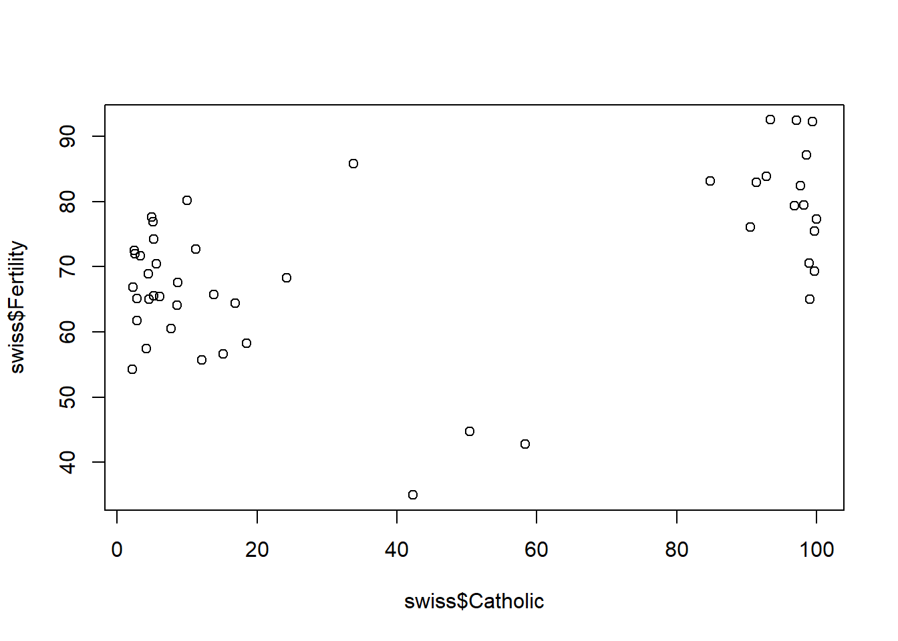

Writing a reproducible paper with Quarto
![]()
Why reproducible research (in R)?
Some arguments…
Access: Research is normally funded by taxpayers (researchers are also taxpayers). Hence, it should be freely accessible to everyone without any barriers, e.g., without requiring commercial software. Importantly, researchers from developing countries are even more dependent on free access to knowledge (Kirsop and Chan 2005).
Reproducability: Even if you have written a study and analyzed the data yourself you will forget what you did after a few months. A fully reproducible setup will help you to trace back your own steps. Obviously, the same is true for other researchers who may want to understand your work and built on it. It may sound like a joke but why not aim for a document that can be used to reproduce your findings in 500 years.
Errors: Manual steps in data analysis (e.g., manually copy/pasting values into a table etc.) may introduce errors. R Markdown allows you to automatize such steps and/or avoid them.
Revisions: Revising a paper takes much less time if you have all the code you need in one place, i.e., one
.qmdfile. For instance, if you decide to exclude a subset of your data you simply need to insert one line of your code at the beginning and everything is rebuilt/re-estimated automatically.
Why Quarto?
Formatting text as PDF is probably one of the most widespread standards in the scientific community, especially when it comes to submitting papers and similar documents. The traditional way to well-formatted and good-looking PDFs is often through LaTeX or Word. However, if you have spent hours and hours debugging latex code (or getting it to run) you may be on the lookout for something new.
The fairly new pagedown R package takes a completely new approach. While the main purpose of pagedown is to create high-quality PDFs, the idea is to take advantage of modern web technologies (HTML/JSS/Javascript) with which one can design web pages and eventually print those to PDF.
While web pages are usually single-page scrollable documents, pagedown uses the JavaScript library Paged.js which allows documents to be paginated with elements like headers, footers and everything a readable scientific paper will need. Additionally, pagedown documents are based on R Markdown. In our view, Pagedown and the underlying technology may replace Latex in the long run. In the near future it should also be possible to produce a PDF with static graph and an equivalent html with interactive graps (see dicsussion here).
Prerequesites
We assume that you are using R on a day-to-day basis and you may have even started to work in R Markdown. If you don’t know what R Markdown is there are many great resources that you should use (e.g. watch this short video). An older template [see Bauer (2018); https://osf.io/q395s] on which this newer template is based, may provide a quick entry point to writing a reproducible with R Markdown and Latex.
Based on R Markdown, Pagedown allows you to create custom and well-formatted (paged) HTML Documents. For a comprehensive overview watch this video which is a record of a talk introducing pagedown given by Yihui Xie (who in addition to Romain Lesur developed the pagedown package). If you are not in a video watching mood find the slides here.
Then…
- …install R and Rstudio (most recent versions) (R Core Team 2017; RStudio Team 2015).
- …install the “pagedown”-package from github using the code below (Xie and Lesur 2021; Xie et al. 2021).
- …download the 4 input files we created —
paper.qmd,references.bib,data.csvandamerican-sociological-association.csl— from this folder. Ignore the other files. - …also download the 4 styling files we created:
wp_paged.html,wp.css,wp-fonts.cssandwp-pages.css. - …store all 8 files from above together in one folder (and use this folder as your working directory later on)
- …learn R and read about the other underlying components namely Markdown, R Markdown and Pagedown.
- …pagedown comes with several Rmd-templates (presentations, poster, thesis, etc.) and via this review we provide another template for a working paper style. If however you want to modify single aspects or create your own template, you will need to at least gain some basic skills in CSS and HTML.
Basics: Input files, output files and the YAML header
All the files you need to produce the present PDF file are:
- the input files:
paper.qmd(the underlying R Markdown file).references.bib(the bibliography).- I use paperpile to manage my references and export the
.bibfile into the folder that contains my.qmdfile.
- I use paperpile to manage my references and export the
data.csv(some raw data).american-sociological-association.csl(defines the style of your bibliography).1
- the “styling” files:
Basically, these are files you will need to specify in the YAML of your rmd-file, so that R and ultimately pagedown recognizes the certain style you want to achieve for your document. With using our templates, you will create a document that has the “look” of a working paper (we based our files on the jss_paged pagedown format).
wp_paged.html(based onjss_paged.html)wp.csswp-fonts.csswp-pages.css
Take paper.qmd (the underlying R Markdown file of this pdf) and have a look at the YAML (line #18 - #22) to see how to specifiy these files. Basically, what happens here is that within the jss_paged function we additionally specify that we want to use custom CSS and custom HTML.
Download these files and save them into a folder. Close R/Rstudio and directly open paper_pagedown.qmd with RStudio. Doing so assures that the working directory is set to the folder that contains paper.qmd and the other files.2
Once you run/compile the paper.qmd file in Rstudio it creates a output file called paper_pagedown.html.
By using pagedown’s chrome_print function in the YAML (line #25) your html based web page will be printed to paper_pagedown.pdf (the one you are reading right now).
Both outputs will be saved in your working directory.
Referencing within your document
To see how referencing works simply see the different examples for figures, tables and sections below. For instance in Section 8 you can find different ways of referencing tables. The code of the underlying paper.qmd will show you how I referenced Section 8 right here namely with ‘@sec-tables’ whereas the corresponding section title was assigned the corresponding label ‘# Tables {#sec-tables}’.
Software versioning
Software changes and gets updated, especially with an active developer community like that of R. Luckily you can always access old versions of R and old version of R packages in the archive. In the archive you need to choose a particular package, e.g dplyr and search for the right version, e.g., dplyr_0.2.tar.gz. Then insert the path in the following function: install.packages("https://....../dplyr_0.2.tar.gz", repos=NULL, type="source"). Ideally, however, results will be simply reproducible in the most current R and package versions.
I would recommend to use the command below and simply add it to the appendix as I did here in Appendix @ref(sec:rsessioninfo). This will make sure you always inform the reader about the package versions your relied on in your paper. For more advanced tools see packrat.
cat(paste("#", capture.output(sessionInfo()), "\n", collapse =""))
# or use message() instead of cat()Data
Import
Generally, code is evaluated by inserting regular code chunks.
[1] 1 2 3 4 5 6 7 8 9 10Below we import an exemplary dataset (you can find data.csv in the folder with the other files).
data <- read.csv("data.csv")
head(data) Fertility Agriculture Examination Education Catholic Infant.Mortality
1 80.2 17.0 15 12 9.96 22.2
2 83.1 45.1 6 9 84.84 22.2
3 92.5 39.7 5 5 93.40 20.2
4 85.8 36.5 12 7 33.77 20.3
5 76.9 43.5 17 15 5.16 20.6
6 76.1 35.3 9 7 90.57 26.6Putting your entire data into the .qmd file
Applying the function dput() to an object gives you the code needed to reproduce that object. So you could paste that code into your .qmd file if you don’t want to have extra data files. This makes sense were data files are small.
structure(list(Fertility = c(80.2, 83.1, 92.5, 85.8, 76.9), Agriculture = c(17,
45.1, 39.7, 36.5, 43.5), Examination = c(15L, 6L, 5L, 12L, 17L
), Education = c(12L, 9L, 5L, 7L, 15L), Catholic = c(9.96, 84.84,
93.4, 33.77, 5.16), Infant.Mortality = c(22.2, 22.2, 20.2, 20.3,
20.6)), row.names = c(NA, 5L), class = "data.frame")You can then insert the dput output in an rchunk in your .qmd as below.
data <- structure(list(Fertility = c(80.2, 83.1, 92.5, 85.8, 76.9), Agriculture = c(17,
45.1, 39.7, 36.5, 43.5), Examination = c(15L, 6L, 5L, 12L, 17L
), Education = c(12L, 9L, 5L, 7L, 15L), Catholic = c(9.96, 84.84,
93.4, 33.77, 5.16), Infant.Mortality = c(22.2, 22.2, 20.2, 20.3,
20.6)), class = "data.frame", row.names = c(NA, -5L))Tables
Producing good tables and referencing these tables within a R Markdown document has been a hassle but got much better. Examples that you may use are shown below.
Tables with kable() and kable_styling()
A great function is kable() (knitr package) in combination with kableExtra. Table 2 provides an example. To reference the table produced by the chunk you need to add #| label: tbl-x at the start of the chunk, i.e., #| label: tbl-1 and would reference it by adding “@tbl-1” in your text. See below for the full chunk code (the one that actually produces the table is hidden).
```{r}
#| label: tbl-1
#| tbl-cap: "Summary: Numeric variables"
library(knitr)
library(kableExtra)
kable(swiss[1:5,], row.names = TRUE,
caption = 'Table with kable() and kablestyling()',
format = "html", booktabs = T) %>%
kable_styling(full_width = T,
latex_options = c("striped",
"scale_down",
"HOLD_position"),
font_size = 11)
```| Fertility | Agriculture | Examination | Education | Catholic | Infant.Mortality | |
|---|---|---|---|---|---|---|
| Courtelary | 80.2 | 17.0 | 15 | 12 | 9.96 | 22.2 |
| Delemont | 83.1 | 45.1 | 6 | 9 | 84.84 | 22.2 |
| Franches-Mnt | 92.5 | 39.7 | 5 | 5 | 93.40 | 20.2 |
| Moutier | 85.8 | 36.5 | 12 | 7 | 33.77 | 20.3 |
| Neuveville | 76.9 | 43.5 | 17 | 15 | 5.16 | 20.6 |
Tables with modelsummary
The modelsummary package provides a variety of tables and plots to summarize statistical models and data in R. Modellsummary plots and tables are highly customizable and they can be saved to almost all formats, e.g., HTML, PDF and Markdown. This makes ist especially easy to embed them in dynamic documents. Please look at the package’s extensive documentation where they also show examples for almost any plot or table you might be looking for. In this template we demonstrate an example for modelsummary’s datasummary function. Datasummary creates frequency tables, crosstab tables, correlation tables, balance tables and many more.
Summarize numeric variables
Table 2 shows a summary table for numeric variables.
library(modelsummary)
datasummary_skim(swiss,
type="numeric",
histogram=T,
title = "Summary: Numeric variables")| Unique (#) | Missing (%) | Mean | SD | Min | Median | Max | ||
|---|---|---|---|---|---|---|---|---|
| Fertility | 46 | 0 | 70.1 | 12.5 | 35.0 | 70.4 | 92.5 | |
| Agriculture | 47 | 0 | 50.7 | 22.7 | 1.2 | 54.1 | 89.7 | |
| Examination | 22 | 0 | 16.5 | 8.0 | 3.0 | 16.0 | 37.0 | |
| Education | 19 | 0 | 11.0 | 9.6 | 1.0 | 8.0 | 53.0 | |
| Catholic | 46 | 0 | 41.1 | 41.7 | 2.1 | 15.1 | 100.0 | |
| Infant.Mortality | 37 | 0 | 19.9 | 2.9 | 10.8 | 20.0 | 26.6 |
Summarize categorical variables
Table 3 shows a summary table for categorical variables.
# Create categorical variables
swiss$Education_cat <- cut(swiss$Education,
breaks=c(-Inf, 6, 12, Inf),
labels=c("low","middle","high"))
swiss$Infant.Mortality_cat <- cut(swiss$Infant.Mortality,
breaks=c(-Inf, 18.15, 21.70, Inf),
labels=c("low","middle","high"))
library(flextable)
tab_cat <- datasummary_skim(swiss,
type="categorical",
output = 'flextable')
# additionally we want to change the font, fontsize and spacing
library("gdtools")
library(dplyr)
tab_cat <- tab_cat %>%
font(fontname="Times New Roman", part="header") %>%
font(fontname="Times New Roman", j=1:4) %>%
fontsize(size=12, part="header") %>%
fontsize(size=10, j=1:4) %>%
line_spacing(space = 0.3, part = "all")
tab_cat
|
| N | % |
|---|---|---|---|
Education_cat | low | 14 | 29.8 |
middle | 22 | 46.8 | |
high | 11 | 23.4 | |
Infant.Mortality_cat | low | 12 | 25.5 |
middle | 23 | 48.9 | |
high | 12 | 25.5 |
Regression table
Table 4 shows the output for a regression table. Make sure you name all the models you estimate (even if its 50) and explicitly refer to model names (M1, M2 etc.) in the text.
| Dependent variable: Fertility | |||
|---|---|---|---|
| M1 | M2 | M3 | |
| (Intercept) | 84.080 | 74.234 | 51.101 |
| (5.782) | (2.352) | (10.995) | |
| Education | -0.963 | -0.788 | -0.857 |
| (0.189) | (0.129) | (0.173) | |
| Agriculture | -0.066 | -0.026 | |
| (0.080) | (0.073) | ||
| Catholic | 0.111 | ||
| (0.030) | |||
| Infant.Mortality | 1.493 | ||
| (0.439) | |||
| Num.Obs. | 47 | 47 | 47 |
| R2 | 0.449 | 0.575 | 0.566 |
| R2 Adj. | 0.424 | 0.555 | 0.536 |
| AIC | 349.7 | 337.6 | 340.5 |
| BIC | 357.1 | 345.0 | 349.7 |
| Log.Lik. | -170.846 | -164.782 | -165.243 |
| RMSE | 9.17 | 8.06 | 8.14 |
| Notes: some notes... | |||
Inline code & results
Reproduction reaches new heights when you work with inline code. For instance, you can automatize the display of certain coefficients within the text. An example is to include estimates, e.g., the coefficient of dist of the model we ran above. `r round(coef(M1)[2], 2)``r 3 + 7`
Inline code/results that depend on earlier objects in your document will automatically be updated once you change those objects. For instance, imagine a reviewer asks you to omit certain observations from your sample. You can simply do so in the beginning of your code and push play subsequently.. at time you might have to set cache = FALSE at the beginning so that all the code chunks are rerun.
Researchers often avoid referring to results in-text etc. because you easily forget to change them when revising a manuscript. At the same it can make an article much more informative and easier to read, e.g., if you discuss a coefficient in the text you can directly show it in the section in which you discuss it. Inline code allows you to do just that. R Markdown allows you to that do so in a reproducible and automatized manner.
Graphs
R base graphs
Inserting figures can be slightly more complicated. Ideally, we would produce and insert them directly in the .qmd file. It’s relatively simple to insert R base graphs as you can see in (fig1?).

But it turns out that it doesn’t always work so well.
ggplot2 graphs
Same is true for ggplot2 as you can see in (fig2?).

Compiling the document
To view your paper, pagedown requires a web server (since it is based on paged.js)3. By compiling a document, R Studio will display your HTML page through a local web server, i.e., paged.js will work in RStudio Viewer.
There are several options, depending on your intention:
click on the
Knitbutton in R Studio which by default will provide a HTML document in the RStudio viewer pane (the HTML will be stored in your working directory)use pagedown’s
chrome_printfunction in the YAML (uncomment line #24 of thisRmdfile) if additionally you want your HTML based web page to be printed to be PDF (the PDF will be stored in your working directory)to “live”-preview your pages do not click on the
Knitbutton but use the xaringan (Xie 2021) RStudio add-in Infinite Moon Reader. You can simply call the functionxaringan::inf_mr()(within your console). This will launch a local web server via the servr package (Xie 2021a) and display your pages in the RStudio viewer. Each time you save your document (Ctrl+S) xaringan updates your pages in the viewer.If you use the option
self_contained: false(see line #21 of thisRmdfile) (change to true for a self-contained document, but it’ll be a litte slower for Pandoc to render), don’t click on theKnitbutton in RStudio. Use instead the xaringan (Xie 2021) RStudio add-in Infinite Moon Reader.
Good practices for reproducibility
Every researcher has his own optimized setup. Currently we would recommend the following:
- Keep all files of your project (that matter for producing the PDF) in one folder without subfolders. You can zip and directly upload that folder to the Harvard dataverse.4
- Make sure that filenames have a logic to them.
- Main file with text/code: “paper.qmd”, “report.qmd”
- Data files: “data_xxxxxx.*”
- Image files: “fig_xxxxxx.*”
- Tables files: “table_xxxx.*”
- etc.
- Ideally, your filenames will correspond to the names in the paper. For instance, Figure 1 in the paper may have a corresponding file called
fig_1_xxxxx.pdf.
- Use the document outline in R studio (Ctrl + Shift + O) when you work with R Markdown.
- Name rchunks according to what they do or produce:
- “
fig-...” for chunks producing figures - “
table-...” for chunks producing tables - “
model-...” for chunks producing model estimates - “
import-...” for chunks importing data - “
recoding-...” for chunks in which data is recoded
- “
- Use “really” informative variable names:
- Q: What do you think does the variable trstep measure? It actually measures trust in the European parliament.
- How could we call this variable instead? Yes,
trust.european.parliamentwhich is longer but will probably be understood by another researcher in 50 years.
- How could we call this variable instead? Yes,
- If your setup is truly reproducible you will probably re-use the variable names that you generate as variable names in the tables you produce. Hence, there is an incentive to use good names.
- Q: What do you think does the variable trstep measure? It actually measures trust in the European parliament.
- Use unique identifiers in the final R Markdown document paper.qmd that you upload:
- Think of someone who wants to produce Figure 1/Model 1/Table 1 in your paper but doesn’t find it in your code…
- Name the chunks “fig-1”, “fig-2” as the are named in the published paper.
- Name the chunks that produce tables “table-1”, “table-2” etc. as they are named in the published paper.
- Name your statistical models in your R code “M1”, “M2” as they are named in the published paper.
- Think of someone who wants to produce Figure 1/Model 1/Table 1 in your paper but doesn’t find it in your code…
Additional tricks for publishing
- Make your script anonymous
- Simply put a
<!-- ... -->around any identifying information, e.g., author names, title footnote etc.
- Simply put a
- Counting words
- Use adobe acrobat (commerical software) to convert your file to a word file. Then open in word and delete all the parts that shouldn’t go into the word count. The word count is displayed in the lower right.
- Use an one of the online services to count your words (search for “pdf word count”)
- Appendix: You can change the numbering format for the appendix in the rmd file
- What is still not possible in this document is to automatically have separate reference sections for paper and appendix.
- Journals may require you to use their tex style: Sometimes you can simply use their template in your rmarkdown file. See here for a PLOS one example.
Citation styles
If your study needs to follow a particular citation style, you can set the corresponding style in the header of your .qmd document. To do so you have to download the corresponding .csl file.
In the present document we use the style of the American Sociological Association and set it in the preamble with csl: american-sociological-association.csl. However, you also need to download the respective .csl file from the following github page: https://github.com/citation-style-language/styles and copy it into your working directory for it to work.
The github directory contains a wide variety of citation style files depending on what discipline you work in.
References
Online appendix
Attach R session info in appendix
Since R and R packages are constantly evolving you might want to add the R session info that contains information on the R version as well as the packages that are loaded.
R version 4.2.2 (2022-10-31 ucrt)
Platform: x86_64-w64-mingw32/x64 (64-bit)
Running under: Windows 10 x64 (build 17763)
Matrix products: default
attached base packages:
[1] stats graphics grDevices utils datasets methods base
other attached packages:
[1] ggplot2_3.4.1 gt_0.8.0 dplyr_1.1.0 gdtools_0.3.0
[5] flextable_0.8.5 modelsummary_1.3.0 kableExtra_1.3.4 knitr_1.42
loaded via a namespace (and not attached):
[1] httr_1.4.4 sass_0.4.5 jsonlite_1.8.4 viridisLite_0.4.1
[5] datawizard_0.6.5 shiny_1.7.4 askpass_1.1 highr_0.10
[9] tables_0.9.10 yaml_2.3.7 bayestestR_0.13.0 pillar_1.8.1
[13] backports_1.4.1 glue_1.6.2 uuid_1.1-0 digest_0.6.31
[17] promises_1.2.0.1 checkmate_2.1.0 rvest_1.0.3 colorspace_2.1-0
[21] htmltools_0.5.4 httpuv_1.6.9 gfonts_0.2.0 pkgconfig_2.0.3
[25] httpcode_0.3.0 xtable_1.8-4 scales_1.2.1 webshot_0.5.4
[29] svglite_2.1.1 later_1.3.0 officer_0.5.2 tibble_3.1.8
[33] openssl_2.0.5 farver_2.1.1 generics_0.1.3 ellipsis_0.3.2
[37] cachem_1.0.6 withr_2.5.0 cli_3.6.0 magrittr_2.0.3
[41] crayon_1.5.2 mime_0.12 memoise_2.0.1 evaluate_0.20
[45] fansi_1.0.4 xml2_1.3.3 tools_4.2.2 data.table_1.14.6
[49] lifecycle_1.0.3 stringr_1.5.0 munsell_0.5.0 zip_2.2.2
[53] compiler_4.2.2 systemfonts_1.0.4 rlang_1.0.6 grid_4.2.2
[57] parameters_0.20.2 rstudioapi_0.14 htmlwidgets_1.6.1 base64enc_0.1-3
[61] labeling_0.4.2 rmarkdown_2.20 gtable_0.3.1 curl_5.0.0
[65] R6_2.5.1 performance_0.10.2 fastmap_1.1.0 utf8_1.2.3
[69] insight_0.19.0 stringi_1.7.12 crul_1.3 Rcpp_1.0.10
[73] vctrs_0.5.2 tidyselect_1.2.0 xfun_0.37 All the code in the paper
To simply attach all the code you used in the PDF file in the appendix see the R chunk in the underlying .qmd file:
knitr::opts_chunk$set(cache = FALSE)
# Use chache = TRUE if you want to speed up compilation
# A function to allow for showing some of the inline code
rinline <- function(code){
html <- '<code class="r">``` `r CODE` ```</code>'
sub("CODE", code, html)
}
remotes::install_github('rstudio/pagedown')
install.packages(c("rmarkdown", "knitr", "kableExtra",
"stargazer", "modelsummary", "knitr", "gt"))
cat(paste("#", capture.output(sessionInfo()), "\n", collapse =""))
# or use message() instead of cat()
x <- 1:10
x
data <- read.csv("data.csv")
head(data)
dput(data[1:5,]) # here we only take a subset
data <- structure(list(Fertility = c(80.2, 83.1, 92.5, 85.8, 76.9), Agriculture = c(17,
45.1, 39.7, 36.5, 43.5), Examination = c(15L, 6L, 5L, 12L, 17L
), Education = c(12L, 9L, 5L, 7L, 15L), Catholic = c(9.96, 84.84,
93.4, 33.77, 5.16), Infant.Mortality = c(22.2, 22.2, 20.2, 20.3,
20.6)), class = "data.frame", row.names = c(NA, -5L))
library(knitr)
library(kableExtra)
kable(swiss[1:5,], row.names = TRUE,
caption = 'Table with kable() and kablestyling()',
format = "html", booktabs = T) %>%
kable_styling(full_width = T,
latex_options = c("striped",
"scale_down",
"HOLD_position"),
font_size = 11)
library(modelsummary)
datasummary_skim(swiss,
type="numeric",
histogram=T,
title = "Summary: Numeric variables")
# Create categorical variables
swiss$Education_cat <- cut(swiss$Education,
breaks=c(-Inf, 6, 12, Inf),
labels=c("low","middle","high"))
swiss$Infant.Mortality_cat <- cut(swiss$Infant.Mortality,
breaks=c(-Inf, 18.15, 21.70, Inf),
labels=c("low","middle","high"))
library(flextable)
tab_cat <- datasummary_skim(swiss,
type="categorical",
output = 'flextable')
# additionally we want to change the font, fontsize and spacing
library("gdtools")
library(dplyr)
tab_cat <- tab_cat %>%
font(fontname="Times New Roman", part="header") %>%
font(fontname="Times New Roman", j=1:4) %>%
fontsize(size=12, part="header") %>%
fontsize(size=10, j=1:4) %>%
line_spacing(space = 0.3, part = "all")
tab_cat
library(modelsummary)
M1 <- lm(Fertility ~ Education + Agriculture, data = swiss)
M2 <- lm(Fertility ~ Education + Catholic, data = swiss)
M3 <- lm(Fertility ~ Education + Infant.Mortality + Agriculture, data = swiss)
models <- list("M1" = M1, "M2" = M2, "M3" = M3)
library(gt)
# additionally we want to change the font, font size and spacing
modelsummary(models,
output = 'gt',
notes = "Notes: some notes...") %>%
tab_spanner(label = 'Dependent variable: Fertility', columns = 2:4) %>%
tab_options(
table.font.size = 10,
data_row.padding = px(1),
table.border.top.color = "white",
heading.border.bottom.color = "black",
row_group.border.top.color = "black",
row_group.border.bottom.color = "white",
table.border.bottom.color = "white",
column_labels.border.top.color = "black",
column_labels.border.bottom.color = "black",
table_body.border.bottom.color = "black",
table_body.hlines.color = "white"
)
plot(swiss$Catholic, swiss$Fertility)
library(ggplot2)
ggplot(swiss, aes(x=Catholic, y=Fertility, shape=Education_cat)) + geom_point() +
labs(x="Agriculture", y = "Fertility",
shape="Education") + theme_classic()
print(sessionInfo(), local = FALSE)Footnotes
You can download various citation style files from this webpage: https://github.com/citation-style-language/styles.↩︎
You can always check your working directory in R with
getwd().↩︎open-source library to paginate content in the browser↩︎
Another good folder setup would be to store all files needed as input files for the R Markdown manuscript in a subfolder called “input” and all output files that are produced apart from paper.html and paper.pdf in a subfolder called “output”.↩︎